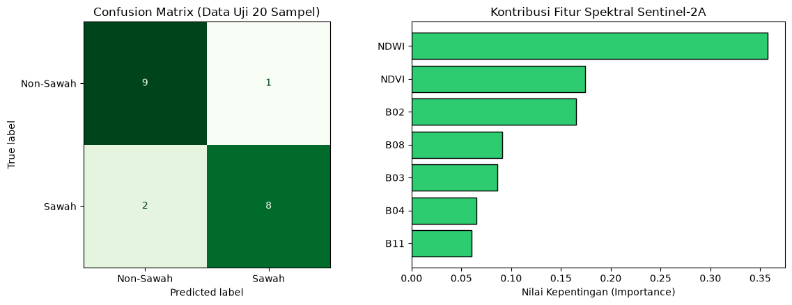
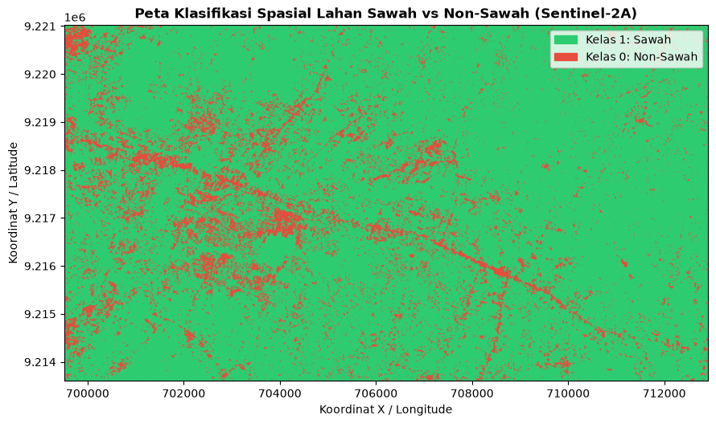

Klasifikasi Spasial Sawah dan Non-Sawah Berbasis Citra Sentinel-2A#
Notebook ini menyajikan alur kerja klasifikasi tutupan lahan menjadi dua kategori, yaitu Sawah dan Non-Sawah. Proses dimulai dari penggunaan data sampel berlabel, pengunduhan komposit Sentinel-2 Level-2A dalam format GeoTIFF melalui openEO, pembentukan variabel spektral, kemudian penerapan model klasifikasi biner.
Data referensi terdiri atas 100 sampel: 50 sampel sawah dan 50 sampel non-sawah. Pelabelan sampel sebelumnya dilakukan di QGIS.
Instalasi Library#
Jalankan sel berikut untuk memasang pustaka yang dibutuhkan dalam pengolahan data spasial, akses citra, pemodelan, serta visualisasi.
pip install geopandas
Requirement already satisfied: geopandas in c:\users\hype amd\appdata\local\programs\python\python313\lib\site-packages (1.1.4)
Requirement already satisfied: numpy>=1.24 in c:\users\hype amd\appdata\local\programs\python\python313\lib\site-packages (from geopandas) (2.5.2)
Requirement already satisfied: pyogrio>=0.7.2 in c:\users\hype amd\appdata\local\programs\python\python313\lib\site-packages (from geopandas) (0.13.0)
Requirement already satisfied: packaging in c:\users\hype amd\appdata\roaming\python\python313\site-packages (from geopandas) (26.3)
Requirement already satisfied: pandas>=2.0.0 in c:\users\hype amd\appdata\local\programs\python\python313\lib\site-packages (from geopandas) (2.3.3)
Requirement already satisfied: pyproj>=3.5.0 in c:\users\hype amd\appdata\local\programs\python\python313\lib\site-packages (from geopandas) (3.7.2)
Requirement already satisfied: shapely>=2.0.0 in c:\users\hype amd\appdata\local\programs\python\python313\lib\site-packages (from geopandas) (2.1.2)
Requirement already satisfied: python-dateutil>=2.8.2 in c:\users\hype amd\appdata\roaming\python\python313\site-packages (from pandas>=2.0.0->geopandas) (2.9.0.post0)
Requirement already satisfied: pytz>=2020.1 in c:\users\hype amd\appdata\local\programs\python\python313\lib\site-packages (from pandas>=2.0.0->geopandas) (2026.3.post1)
Requirement already satisfied: tzdata>=2022.7 in c:\users\hype amd\appdata\local\programs\python\python313\lib\site-packages (from pandas>=2.0.0->geopandas) (2026.3)
Requirement already satisfied: certifi in c:\users\hype amd\appdata\local\programs\python\python313\lib\site-packages (from pyogrio>=0.7.2->geopandas) (2026.7.22)
Requirement already satisfied: six>=1.5 in c:\users\hype amd\appdata\roaming\python\python313\site-packages (from python-dateutil>=2.8.2->pandas>=2.0.0->geopandas) (1.17.0)
Note: you may need to restart the kernel to use updated packages.
[notice] A new release of pip is available: 25.1.1 -> 26.2.1
[notice] To update, run: python.exe -m pip install --upgrade pip
pip install openeo
Requirement already satisfied: openeo in c:\users\hype amd\appdata\local\programs\python\python313\lib\site-packages (0.51.0)
Requirement already satisfied: requests>=2.26.0 in c:\users\hype amd\appdata\local\programs\python\python313\lib\site-packages (from openeo) (2.34.2)
Requirement already satisfied: urllib3>=1.9.0 in c:\users\hype amd\appdata\local\programs\python\python313\lib\site-packages (from openeo) (2.7.0)
Requirement already satisfied: shapely>=1.6.4 in c:\users\hype amd\appdata\local\programs\python\python313\lib\site-packages (from openeo) (2.1.2)
Requirement already satisfied: numpy>=1.17.0 in c:\users\hype amd\appdata\local\programs\python\python313\lib\site-packages (from openeo) (2.5.2)
Requirement already satisfied: xarray<2025.01.2,>=0.12.3 in c:\users\hype amd\appdata\local\programs\python\python313\lib\site-packages (from openeo) (2025.1.1)
Requirement already satisfied: pandas<3.0.0,>0.20.0 in c:\users\hype amd\appdata\local\programs\python\python313\lib\site-packages (from openeo) (2.3.3)
Requirement already satisfied: pystac>=1.5.0 in c:\users\hype amd\appdata\local\programs\python\python313\lib\site-packages (from openeo) (1.15.2)
Requirement already satisfied: deprecated>=1.2.12 in c:\users\hype amd\appdata\local\programs\python\python313\lib\site-packages (from openeo) (1.3.1)
Requirement already satisfied: oschmod>=0.3.12 in c:\users\hype amd\appdata\local\programs\python\python313\lib\site-packages (from openeo) (0.3.12)
Requirement already satisfied: geopandas>=0.14 in c:\users\hype amd\appdata\local\programs\python\python313\lib\site-packages (from openeo) (1.1.4)
Requirement already satisfied: python-dateutil>=2.8.2 in c:\users\hype amd\appdata\roaming\python\python313\site-packages (from pandas<3.0.0,>0.20.0->openeo) (2.9.0.post0)
Requirement already satisfied: pytz>=2020.1 in c:\users\hype amd\appdata\local\programs\python\python313\lib\site-packages (from pandas<3.0.0,>0.20.0->openeo) (2026.3.post1)
Requirement already satisfied: tzdata>=2022.7 in c:\users\hype amd\appdata\local\programs\python\python313\lib\site-packages (from pandas<3.0.0,>0.20.0->openeo) (2026.3)
Requirement already satisfied: packaging>=23.2 in c:\users\hype amd\appdata\roaming\python\python313\site-packages (from xarray<2025.01.2,>=0.12.3->openeo) (26.3)
Requirement already satisfied: wrapt<3,>=1.10 in c:\users\hype amd\appdata\local\programs\python\python313\lib\site-packages (from deprecated>=1.2.12->openeo) (2.4.0)
Requirement already satisfied: pyogrio>=0.7.2 in c:\users\hype amd\appdata\local\programs\python\python313\lib\site-packages (from geopandas>=0.14->openeo) (0.13.0)
Requirement already satisfied: pyproj>=3.5.0 in c:\users\hype amd\appdata\local\programs\python\python313\lib\site-packages (from geopandas>=0.14->openeo) (3.7.2)
Requirement already satisfied: pywin32 in c:\users\hype amd\appdata\local\programs\python\python313\lib\site-packages (from oschmod>=0.3.12->openeo) (312)
Requirement already satisfied: certifi in c:\users\hype amd\appdata\local\programs\python\python313\lib\site-packages (from pyogrio>=0.7.2->geopandas>=0.14->openeo) (2026.7.22)
Requirement already satisfied: pystac-core<2,>=1.15.0 in c:\users\hype amd\appdata\local\programs\python\python313\lib\site-packages (from pystac>=1.5.0->openeo) (1.15.2)
Requirement already satisfied: pystac-ext-classification in c:\users\hype amd\appdata\local\programs\python\python313\lib\site-packages (from pystac>=1.5.0->openeo) (2.0.1)
Requirement already satisfied: pystac-ext-datacube in c:\users\hype amd\appdata\local\programs\python\python313\lib\site-packages (from pystac>=1.5.0->openeo) (2.2.1)
Requirement already satisfied: pystac-ext-eo in c:\users\hype amd\appdata\local\programs\python\python313\lib\site-packages (from pystac>=1.5.0->openeo) (1.1.1)
Requirement already satisfied: pystac-ext-file in c:\users\hype amd\appdata\local\programs\python\python313\lib\site-packages (from pystac>=1.5.0->openeo) (2.1.1)
Requirement already satisfied: pystac-ext-grid in c:\users\hype amd\appdata\local\programs\python\python313\lib\site-packages (from pystac>=1.5.0->openeo) (1.1.1)
Requirement already satisfied: pystac-ext-item-assets in c:\users\hype amd\appdata\local\programs\python\python313\lib\site-packages (from pystac>=1.5.0->openeo) (1.0.1)
Requirement already satisfied: pystac-ext-label in c:\users\hype amd\appdata\local\programs\python\python313\lib\site-packages (from pystac>=1.5.0->openeo) (1.0.2)
Requirement already satisfied: pystac-ext-mgrs in c:\users\hype amd\appdata\local\programs\python\python313\lib\site-packages (from pystac>=1.5.0->openeo) (1.0.1)
Requirement already satisfied: pystac-ext-mlm in c:\users\hype amd\appdata\local\programs\python\python313\lib\site-packages (from pystac>=1.5.0->openeo) (1.4.1)
Requirement already satisfied: pystac-ext-pointcloud in c:\users\hype amd\appdata\local\programs\python\python313\lib\site-packages (from pystac>=1.5.0->openeo) (1.0.1)
Requirement already satisfied: pystac-ext-projection in c:\users\hype amd\appdata\local\programs\python\python313\lib\site-packages (from pystac>=1.5.0->openeo) (2.0.1)
Requirement already satisfied: pystac-ext-raster in c:\users\hype amd\appdata\local\programs\python\python313\lib\site-packages (from pystac>=1.5.0->openeo) (1.1.1)
Requirement already satisfied: pystac-ext-render in c:\users\hype amd\appdata\local\programs\python\python313\lib\site-packages (from pystac>=1.5.0->openeo) (2.0.0)
Requirement already satisfied: pystac-ext-sar in c:\users\hype amd\appdata\local\programs\python\python313\lib\site-packages (from pystac>=1.5.0->openeo) (1.0.1)
Requirement already satisfied: pystac-ext-sat in c:\users\hype amd\appdata\local\programs\python\python313\lib\site-packages (from pystac>=1.5.0->openeo) (1.0.1)
Requirement already satisfied: pystac-ext-scientific in c:\users\hype amd\appdata\local\programs\python\python313\lib\site-packages (from pystac>=1.5.0->openeo) (1.0.1)
Requirement already satisfied: pystac-ext-storage in c:\users\hype amd\appdata\local\programs\python\python313\lib\site-packages (from pystac>=1.5.0->openeo) (2.0.1)
Requirement already satisfied: pystac-ext-table in c:\users\hype amd\appdata\local\programs\python\python313\lib\site-packages (from pystac>=1.5.0->openeo) (1.2.1)
Requirement already satisfied: pystac-ext-timestamps in c:\users\hype amd\appdata\local\programs\python\python313\lib\site-packages (from pystac>=1.5.0->openeo) (1.1.1)
Requirement already satisfied: pystac-ext-version in c:\users\hype amd\appdata\local\programs\python\python313\lib\site-packages (from pystac>=1.5.0->openeo) (1.2.1)
Requirement already satisfied: pystac-ext-view in c:\users\hype amd\appdata\local\programs\python\python313\lib\site-packages (from pystac>=1.5.0->openeo) (1.0.1)
Requirement already satisfied: pystac-ext-xarray-assets in c:\users\hype amd\appdata\local\programs\python\python313\lib\site-packages (from pystac>=1.5.0->openeo) (1.0.1)
Requirement already satisfied: six>=1.5 in c:\users\hype amd\appdata\roaming\python\python313\site-packages (from python-dateutil>=2.8.2->pandas<3.0.0,>0.20.0->openeo) (1.17.0)
Requirement already satisfied: charset_normalizer<4,>=2 in c:\users\hype amd\appdata\local\programs\python\python313\lib\site-packages (from requests>=2.26.0->openeo) (3.5.1)
Requirement already satisfied: idna<4,>=2.5 in c:\users\hype amd\appdata\local\programs\python\python313\lib\site-packages (from requests>=2.26.0->openeo) (3.19)
Note: you may need to restart the kernel to use updated packages.
[notice] A new release of pip is available: 25.1.1 -> 26.2.1
[notice] To update, run: python.exe -m pip install --upgrade pip
%pip install scikit-learn
Requirement already satisfied: scikit-learn in c:\users\hype amd\appdata\local\programs\python\python313\lib\site-packages (1.9.0)
Requirement already satisfied: numpy>=1.24.1 in c:\users\hype amd\appdata\local\programs\python\python313\lib\site-packages (from scikit-learn) (2.5.2)
Requirement already satisfied: scipy>=1.10.0 in c:\users\hype amd\appdata\local\programs\python\python313\lib\site-packages (from scikit-learn) (1.18.1)
Requirement already satisfied: joblib>=1.4.0 in c:\users\hype amd\appdata\local\programs\python\python313\lib\site-packages (from scikit-learn) (1.6.0)
Requirement already satisfied: narwhals>=2.0.1 in c:\users\hype amd\appdata\local\programs\python\python313\lib\site-packages (from scikit-learn) (2.25.0)
Requirement already satisfied: threadpoolctl>=3.5.0 in c:\users\hype amd\appdata\local\programs\python\python313\lib\site-packages (from scikit-learn) (3.6.0)
Requirement already satisfied: cloudpickle>=3.0 in c:\users\hype amd\appdata\local\programs\python\python313\lib\site-packages (from joblib>=1.4.0->scikit-learn) (3.1.2)
Note: you may need to restart the kernel to use updated packages.
[notice] A new release of pip is available: 25.1.1 -> 26.2.1
[notice] To update, run: python.exe -m pip install --upgrade pip
%pip install rasterio
Requirement already satisfied: rasterio in c:\users\hype amd\appdata\local\programs\python\python313\lib\site-packages (1.5.2)
Requirement already satisfied: affine in c:\users\hype amd\appdata\local\programs\python\python313\lib\site-packages (from rasterio) (3.0.1)
Requirement already satisfied: attrs in c:\users\hype amd\appdata\local\programs\python\python313\lib\site-packages (from rasterio) (26.1.0)
Requirement already satisfied: certifi in c:\users\hype amd\appdata\local\programs\python\python313\lib\site-packages (from rasterio) (2026.7.22)
Requirement already satisfied: click!=8.2.*,>=4.0 in c:\users\hype amd\appdata\local\programs\python\python313\lib\site-packages (from rasterio) (8.5.0)
Requirement already satisfied: numpy>=2 in c:\users\hype amd\appdata\local\programs\python\python313\lib\site-packages (from rasterio) (2.5.2)
Requirement already satisfied: pyparsing>=3.0 in c:\users\hype amd\appdata\local\programs\python\python313\lib\site-packages (from rasterio) (3.3.2)
Note: you may need to restart the kernel to use updated packages.
[notice] A new release of pip is available: 25.1.1 -> 26.2.1
[notice] To update, run: python.exe -m pip install --upgrade pip
1. Penyusunan Data Referensi Spasial#
Tahap awal menggunakan dua himpunan data vektor yang merepresentasikan kelas lahan berbeda. Kedua kelompok diberi label numerik dan teks, lalu digabungkan dalam satu GeoDataFrame dengan sistem koordinat EPSG:4326. Jumlah sampel per kelas dibuat setara agar komposisi data tidak didominasi oleh salah satu kategori.
Kelompok lahan |
Label numerik |
Banyak sampel |
Contoh objek yang diwakili |
|---|---|---|---|
Sawah |
|
50 |
Area budidaya padi pada kondisi vegetatif, tergenang, masa tanam, atau menjelang panen |
Non-Sawah |
|
50 |
Kawasan terbangun, jaringan jalan, perairan tetap, serta vegetasi selain pertanian padi |
Gabungan |
— |
100 |
Seluruh data sampel yang digunakan dalam analisis spasial |
Pada langkah yang sama, batas koordinat seluruh sampel dihitung dan diperluas sedikit sebagai area pengambilan citra.
import geopandas as gpd
import openeo
import pandas as pd
# ==============================================================================
# 1. BACA KEDUA FILE ZIP (SAWAH & NON-SAWAH) DAN BERI LABEL OTOMATIS
# ==============================================================================
# Sesuaikan nama file zip non-sawah milikmu di baris kedua
gdf_sawah = gpd.read_file("./sawah.zip").to_crs("EPSG:4326")
gdf_nonsawah = gpd.read_file("./non-sawah.zip").to_crs("EPSG:4326")
# Beri kolom label secara otomatis
gdf_sawah["label_teks"] = "Sawah"
gdf_sawah["label"] = 1
gdf_nonsawah["label_teks"] = "Non-Sawah"
gdf_nonsawah["label"] = 0
# Gabungkan keduanya menjadi 1 GeoDataFrame (50 + 50 = 100 sampel)
gdf_gabungan = gpd.GeoDataFrame(
pd.concat([gdf_sawah, gdf_nonsawah], ignore_index=True), crs="EPSG:4326"
)
print(f"Jumlah sampel Sawah : {len(gdf_sawah)}")
print(f"Jumlah sampel Non-Sawah : {len(gdf_nonsawah)}")
print(f"Total sampel gabungan : {len(gdf_gabungan)}")
# ==============================================================================
# 2. AMBIL BATAS KOORDINAT GABUNGAN (BOUNDING BOX) UNTUK OPENEO
# ==============================================================================
minx, miny, maxx, maxy = gdf_gabungan.total_bounds
buffer_deg = 0.005 # Tambahan margin ~500 meter agar titik di tepi tetap masuk
bbox = {
"west": float(minx - buffer_deg),
"south": float(miny - buffer_deg),
"east": float(maxx + buffer_deg),
"north": float(maxy + buffer_deg),
}
print("Bounding Box Gabungan:", bbox)
# ==============================================================================
# 3. KONEKSI KE OPENEO & UNDUH SENTINEL-2A FORMAT GEOTIFF (.tif)
# ==============================================================================
conn = openeo.connect("openeo.dataspace.copernicus.eu")
conn.authenticate_oidc()
datacube = conn.load_collection(
"SENTINEL2_L2A",
spatial_extent=bbox,
temporal_extent=["2026-05-01", "2026-09-30"], # Rentang waktu minim awan
bands=[
"B02",
"B03",
"B04",
"B08",
"B11",
], # Blue, Green, Red, NIR, SWIR
max_cloud_cover=10,
)
# Ambil median waktu agar bebas tutupan awan
composite_s2 = datacube.median_time()
# Unduh menjadi file GeoTIFF (.tif)
nama_tif = "sentinel2_sawah_nonsawah.tif"
print("Mengunduh citra Sentinel-2A (.tif)...")
composite_s2.download(nama_tif, format="GTiff")
print(f"Berhasil diunduh: {nama_tif}")
Jumlah sampel Sawah : 50
Jumlah sampel Non-Sawah : 50
Total sampel gabungan : 100
Bounding Box Gabungan: {'west': 112.8065433, 'south': -7.1103645, 'east': 112.9274659, 'north': -7.043801}
Authenticated using refresh token.
Mengunduh citra Sentinel-2A (.tif)...
Berhasil diunduh: sentinel2_sawah_nonsawah.tif
2. Penyediaan Citra dan Pembentukan Variabel Spektral#
Citra diperoleh dari koleksi SENTINEL2_L2A dengan cakupan area berdasarkan batas gabungan sampel. Proses meminta kanal yang diperlukan, membatasi tutupan awan hingga 10%, lalu membentuk nilai tengah temporal menggunakan median_time(). Hasilnya disimpan sebagai berkas GeoTIFF (.tif) untuk digunakan pada tahap ekstraksi piksel dan pemetaan.
Variabel yang digunakan:#
Band Spektral Utama:
B02(Blue - 490 nm),B03(Green - 560 nm),B04(Red - 665 nm) dengan resolusi spasial 10 meter.B08(Near Infrared / NIR - 842 nm) untuk mendeteksi pantulan klorofil tanaman padi.B11(Short-Wave Infrared / SWIR - 1610 nm) untuk mendeteksi kelembapan tanah dan genangan air.
Normalized Difference Vegetation Index (NDVI):
\[\text{NDVI} = \frac{B08 - B04}{B08 + B04}\]Normalized Difference Water Index (NDWI):
\[\text{NDWI} = \frac{B03 - B08}{B03 + B08}\]
import numpy as np
import rasterio
from sklearn.ensemble import RandomForestClassifier
from sklearn.metrics import accuracy_score, classification_report, confusion_matrix
from sklearn.model_selection import train_test_split
# 1. Buka file .tif Sentinel-2A dan samakan proyeksi koordinat (CRS)
with rasterio.open("sentinel2_sawah_nonsawah.tif") as src:
gdf_projected = gdf_gabungan.to_crs(src.crs)
# Ambil titik tengah (centroid) dari tiap sampel (mendukung Point maupun Polygon)
koordinat_sampel = [
(geom.centroid.x, geom.centroid.y) for geom in gdf_projected.geometry
]
# Ekstrak nilai piksel dari kelima band Sentinel-2A
nilai_band = list(src.sample(koordinat_sampel))
# 2. Buat tabel DataFrame Fitur
df_dataset = pd.DataFrame(nilai_band, columns=["B02", "B03", "B04", "B08", "B11"])
# 3. Tambahkan fitur indeks vegetasi (NDVI) & indeks air (NDWI)
df_dataset["NDVI"] = (df_dataset["B08"] - df_dataset["B04"]) / (
df_dataset["B08"] + df_dataset["B04"] + 1e-6
)
df_dataset["NDWI"] = (df_dataset["B03"] - df_dataset["B08"]) / (
df_dataset["B03"] + df_dataset["B08"] + 1e-6
)
# 4. Masukkan Koordinat & Label Kelas (Sawah = 1, Non-Sawah = 0)
df_dataset["Longitude"] = gdf_gabungan.geometry.centroid.x
df_dataset["Latitude"] = gdf_gabungan.geometry.centroid.y
df_dataset["Kelas"] = gdf_gabungan["label_teks"]
df_dataset["Target"] = gdf_gabungan["label"]
# Simpan ke CSV (bisa dipakai juga kalau mau diolah di KNIME)
df_dataset.to_csv("dataset_100sampel_sawah_nonsawah.csv", index=False)
print("Dataset berhasil disimpan ke 'dataset_100sampel_sawah_nonsawah.csv'")
display(df_dataset.head())
# ==============================================================================
# 5. PROSES KLASIFIKASI 2 KELAS (SAWAH VS NON-SAWAH)
# ==============================================================================
fitur_kolom = ["B02", "B03", "B04", "B08", "B11", "NDVI", "NDWI"]
X = df_dataset[fitur_kolom]
y = df_dataset["Kelas"]
# Split 80% Training (40 Sawah + 40 Non-Sawah) & 20% Testing (10 Sawah + 10 Non-Sawah)
X_train, X_test, y_train, y_test = train_test_split(
X, y, test_size=0.2, random_state=42, stratify=y
)
# Latih model Random Forest
model_rf = RandomForestClassifier(n_estimators=100, random_state=42)
model_rf.fit(X_train, y_train)
# Evaluasi pada data uji
y_pred = model_rf.predict(X_test)
print(
"\n=== HASIL EVALUASI KLASIFIKASI 2 KELAS ==="
)
print(f"Akurasi Testing : {accuracy_score(y_test, y_pred) * 100:.2f}%")
print("\nConfusion Matrix:\n", confusion_matrix(y_test, y_pred))
print("\nClassification Report:\n", classification_report(y_test, y_pred))
Dataset berhasil disimpan ke 'dataset_100sampel_sawah_nonsawah.csv'
C:\Users\HYPE AMD\AppData\Local\Temp\ipykernel_21552\276632000.py:31: UserWarning: Geometry is in a geographic CRS. Results from 'centroid' are likely incorrect. Use 'GeoSeries.to_crs()' to re-project geometries to a projected CRS before this operation.
df_dataset["Longitude"] = gdf_gabungan.geometry.centroid.x
C:\Users\HYPE AMD\AppData\Local\Temp\ipykernel_21552\276632000.py:32: UserWarning: Geometry is in a geographic CRS. Results from 'centroid' are likely incorrect. Use 'GeoSeries.to_crs()' to re-project geometries to a projected CRS before this operation.
df_dataset["Latitude"] = gdf_gabungan.geometry.centroid.y
| B02 | B03 | B04 | B08 | B11 | NDVI | NDWI | Longitude | Latitude | Kelas | Target | |
|---|---|---|---|---|---|---|---|---|---|---|---|
| 0 | 617 | 812 | 960 | 2691 | 2910 | 0.474117 | -0.536397 | 112.888444 | -7.093485 | Sawah | 1 |
| 1 | 640 | 870 | 1028 | 3016 | 3419 | 0.491592 | -0.552239 | 112.904635 | -7.101285 | Sawah | 1 |
| 2 | 830 | 1192 | 1277 | 3559 | 3337 | 0.471878 | -0.498211 | 112.900268 | -7.101976 | Sawah | 1 |
| 3 | 582 | 808 | 947 | 2513 | 2978 | 0.452601 | -0.513400 | 112.898792 | -7.082641 | Sawah | 1 |
| 4 | 768 | 1082 | 1605 | 2826 | 3438 | 0.275559 | -0.446264 | 112.893503 | -7.072197 | Sawah | 1 |
=== HASIL EVALUASI KLASIFIKASI 2 KELAS ===
Akurasi Testing : 85.00%
Confusion Matrix:
[[9 1]
[2 8]]
Classification Report:
precision recall f1-score support
Non-Sawah 0.82 0.90 0.86 10
Sawah 0.89 0.80 0.84 10
accuracy 0.85 20
macro avg 0.85 0.85 0.85 20
weighted avg 0.85 0.85 0.85 20
pip install seaborn
Requirement already satisfied: seaborn in c:\users\hype amd\appdata\local\programs\python\python313\lib\site-packages (0.13.2)
Requirement already satisfied: numpy!=1.24.0,>=1.20 in c:\users\hype amd\appdata\local\programs\python\python313\lib\site-packages (from seaborn) (2.5.2)
Requirement already satisfied: pandas>=1.2 in c:\users\hype amd\appdata\local\programs\python\python313\lib\site-packages (from seaborn) (2.3.3)
Requirement already satisfied: matplotlib!=3.6.1,>=3.4 in c:\users\hype amd\appdata\local\programs\python\python313\lib\site-packages (from seaborn) (3.11.1)
Requirement already satisfied: contourpy>=1.0.1 in c:\users\hype amd\appdata\local\programs\python\python313\lib\site-packages (from matplotlib!=3.6.1,>=3.4->seaborn) (1.3.3)
Requirement already satisfied: cycler>=0.10 in c:\users\hype amd\appdata\local\programs\python\python313\lib\site-packages (from matplotlib!=3.6.1,>=3.4->seaborn) (0.12.1)
Requirement already satisfied: fonttools>=4.28.2 in c:\users\hype amd\appdata\local\programs\python\python313\lib\site-packages (from matplotlib!=3.6.1,>=3.4->seaborn) (4.63.0)
Requirement already satisfied: kiwisolver>=1.3.1 in c:\users\hype amd\appdata\local\programs\python\python313\lib\site-packages (from matplotlib!=3.6.1,>=3.4->seaborn) (1.5.1)
Requirement already satisfied: packaging>=20.0 in c:\users\hype amd\appdata\roaming\python\python313\site-packages (from matplotlib!=3.6.1,>=3.4->seaborn) (26.3)
Requirement already satisfied: pillow>=9 in c:\users\hype amd\appdata\local\programs\python\python313\lib\site-packages (from matplotlib!=3.6.1,>=3.4->seaborn) (12.3.0)
Requirement already satisfied: pyparsing>=3 in c:\users\hype amd\appdata\local\programs\python\python313\lib\site-packages (from matplotlib!=3.6.1,>=3.4->seaborn) (3.3.2)
Requirement already satisfied: python-dateutil>=2.7 in c:\users\hype amd\appdata\roaming\python\python313\site-packages (from matplotlib!=3.6.1,>=3.4->seaborn) (2.9.0.post0)
Requirement already satisfied: pytz>=2020.1 in c:\users\hype amd\appdata\local\programs\python\python313\lib\site-packages (from pandas>=1.2->seaborn) (2026.3.post1)
Requirement already satisfied: tzdata>=2022.7 in c:\users\hype amd\appdata\local\programs\python\python313\lib\site-packages (from pandas>=1.2->seaborn) (2026.3)
Requirement already satisfied: six>=1.5 in c:\users\hype amd\appdata\roaming\python\python313\site-packages (from python-dateutil>=2.7->matplotlib!=3.6.1,>=3.4->seaborn) (1.17.0)
Note: you may need to restart the kernel to use updated packages.
[notice] A new release of pip is available: 25.1.1 -> 26.2.1
[notice] To update, run: python.exe -m pip install --upgrade pip
3. Pelatihan, Pengujian, dan Penyajian Peta Kelas#
Tabel fitur hasil ekstraksi dipisahkan secara terstratifikasi agar proporsi kedua kelas tetap terjaga. Sebanyak 80% data digunakan untuk melatih Random Forest, sedangkan 20% sisanya digunakan sebagai data pengujian. Dengan 100 sampel yang seimbang, pembagian tersebut menghasilkan 80 data latih dan 20 data uji.
Keluaran tahap ini mencakup nilai akurasi, confusion matrix, laporan klasifikasi, tingkat kepentingan setiap fitur, serta peta hasil prediksi seluruh piksel citra menjadi kelas Sawah dan Non-Sawah.
import matplotlib.colors as mcolors
import matplotlib.patches as mpatches
import matplotlib.pyplot as plt
import numpy as np
import rasterio
import seaborn as sns
from sklearn.metrics import ConfusionMatrixDisplay
# ==============================================================================
# A. VISUALISASI CONFUSION MATRIX & FEATURE IMPORTANCE
# ==============================================================================
fig, axes = plt.subplots(1, 2, figsize=(12, 4.5))
# 1. Plot Confusion Matrix
ConfusionMatrixDisplay.from_predictions(
y_test, y_pred, cmap="Greens", ax=axes[0], colorbar=False
)
axes[0].set_title("Confusion Matrix (Data Uji 20 Sampel)")
# 2. Plot Tingkat Kepentingan Fitur (Band & Indeks Spektral)
importances = model_rf.feature_importances_
indices = np.argsort(importances)
axes[1].barh(
range(len(indices)),
importances[indices],
color="#2ecc71",
edgecolor="black",
)
axes[1].set_yticks(range(len(indices)))
axes[1].set_yticklabels([fitur_kolom[i] for i in indices])
axes[1].set_xlabel("Nilai Kepentingan (Importance)")
axes[1].set_title("Kontribusi Fitur Spektral Sentinel-2A")
plt.tight_layout()
plt.savefig("evaluasi_klasifikasi_sawah.png", dpi=300)
plt.show()
# ==============================================================================
# B. KLASIFIKASI SELURUH PIKSEL CITRA (.TIF) MENJADI PETA SAWAH VS NON-SAWAH
# ==============================================================================
with rasterio.open("sentinel2_sawah_nonsawah.tif") as src:
img = src.read() # Shape: (5 bands, height, width)
profil_raster = src.profile
bounds = src.bounds
# Ambil masing-masing band (B02, B03, B04, B08, B11)
b02, b03, b04, b08, b11 = (
img[0].astype(float),
img[1].astype(float),
img[2].astype(float),
img[3].astype(float),
img[4].astype(float),
)
# Hitung NDVI dan NDWI untuk seluruh piksel di citra .tif
ndvi_map = (b08 - b04) / (b08 + b04 + 1e-6)
ndwi_map = (b03 - b08) / (b03 + b08 + 1e-6)
# Susun seluruh piksel menjadi matriks 2D (baris = piksel, kolom = 7 fitur)
stack_fitur = np.stack([b02, b03, b04, b08, b11, ndvi_map, ndwi_map], axis=-1)
h, w, c = stack_fitur.shape
piksel_2d = np.nan_to_num(stack_fitur.reshape(-1, c), nan=0.0)
# Prediksi seluruh piksel menggunakan model Random Forest yang sudah dilatih
prediksi_label = model_rf.predict(piksel_2d)
# Ubah hasil prediksi ('Sawah' -> 1, 'Non-Sawah' -> 0) kembali ke ukuran gambar 2D (h, w)
peta_biner = np.where(prediksi_label == "Sawah", 1, 0).reshape(h, w)
# Tampilkan Peta Hasil Klasifikasi Spasial
plt.figure(figsize=(9, 7))
cmap_sawah = mcolors.ListedColormap(["#e74c3c", "#2ecc71"]) # Merah & Hijau
plt.imshow(
peta_biner,
cmap=cmap_sawah,
extent=[bounds.left, bounds.right, bounds.bottom, bounds.top],
)
# Legenda Peta
patch_sawah = mpatches.Patch(color="#2ecc71", label="Kelas 1: Sawah")
patch_nonsawah = mpatches.Patch(color="#e74c3c", label="Kelas 0: Non-Sawah")
plt.legend(handles=[patch_sawah, patch_nonsawah], loc="upper right")
plt.title(
"Peta Klasifikasi Spasial Lahan Sawah vs Non-Sawah (Sentinel-2A)",
fontsize=12,
fontweight="bold",
)
plt.xlabel("Koordinat X / Longitude")
plt.ylabel("Koordinat Y / Latitude")
plt.tight_layout()
plt.savefig("peta_klasifikasi_raster_sawah.png", dpi=300)
plt.show()

c:\Users\HYPE AMD\AppData\Local\Programs\Python\Python313\Lib\site-packages\sklearn\utils\validation.py:2827: UserWarning: X does not have valid feature names, but RandomForestClassifier was fitted with feature names
warnings.warn(
